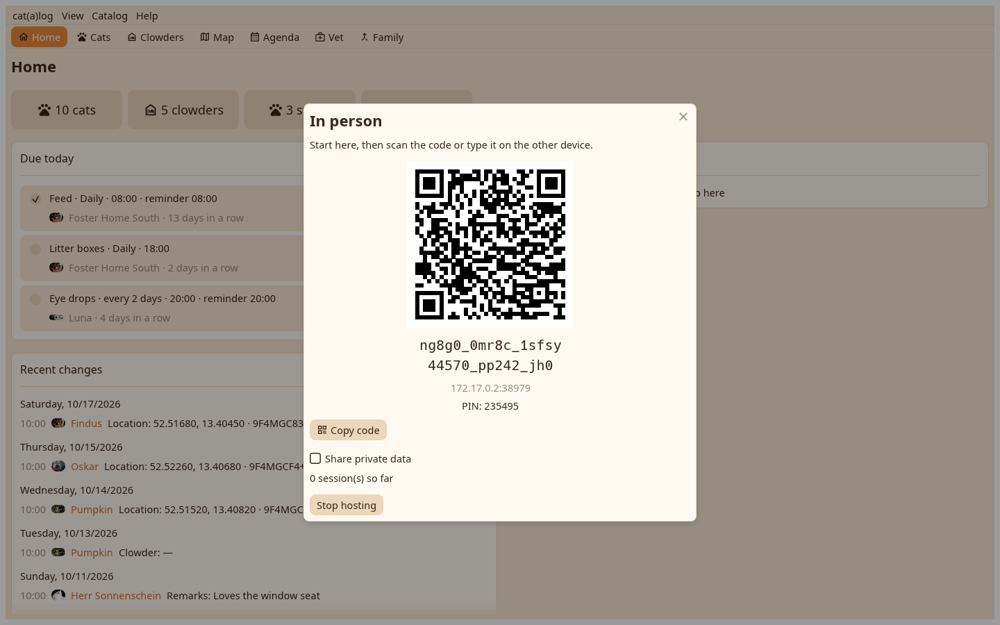

1. The sync page
The shared folder, the bundles, and in person. Start hosting.

2. Hosting
The pair code as a QR and as text with the PIN. The phone scans it and joins; what arrived opens as after a folder round. The desk serves only while this window is open.
